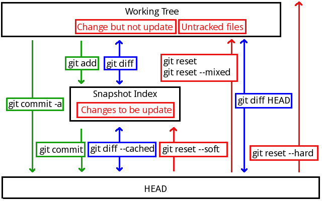

Git入门
配置
初始化个人信息
git config --global user.name "Jade Shan" git config --global user.email aaa@bbb.com
自动转换换行
如果合作人里面有个废柴要在win下开发，让他打开以下开关实现：
-
提交时，自动把
<CR><LF>转为<LF>； -
签出时，自动把
<LF>转为<CR><LF>：
git config --global core.autocrlf true
只在提交时把<CR><LF>转为<LF>:
git config --global core.autocrlf input
当然也会有整个团队都是win环境的废柴团队，那就不用转了:
git config --global core.autocrlf false
代码托管服务商GitHub
先要申请账号，建立自己的repo。
然后上传自己的ssh-key作为连接凭证。上传后检查是否能成功连接：
ssh -T git@github.com
如果失败，用debug方式检查一下是不是因为防火墙的原因：
ssh -vT git@github.com
还有一个失败的可能性是因为没有把私钥加上：
ssh-add ~/.ssh/id_rsa
验证可能成功连接后，把repo复制下来：
git clone git@github.com:Jade-Shan/Jade-Wubi.git
复制下来的第一次提交声明提交到来源：
git push origin master
以后的直接push就可以了：
git push
在GitHub上新建一个项目
mkdir study cd study git init touch README git add README git commit -m 'first commit' git remote add origin git@github.com:Jade-Shan/study.git git push -u origin master
导出一个GitHub上已经存在的项目
把本地的项目加到github上的空库中：
git remote add origin git@github.com:Jade-Shan/study.git git push -u origin master
导出一个GitHub上已经存在的项目
cd existing_git_repo git remote add origin git@github.com:Jade-Shan/study.git git pull -u origin master
基本项目操作
- 工作区（working tree）就是本地的代码。
- 快照（snapshot）建立索引（index）。
- 提交到仓库。
新建立一个工程
cd workspace/wubi git init # 初始化 git add . # 目建立快照的索引 git commit # 提交修改
初始化一个新的工程，会建立.git目录保存信息。add为当前项目建立快照（snapshot）
的索引（index file）。
提交时会在编辑器里要求输入备注。但是要注意第一行要少于50字，如果有第二行， 一定要空白。
拷贝过来的工程
拷贝过来的工程目录中要带上.git目录，然后执行git init就会重新恢复版本库
为可用状态了。
忽略指定文件
有很多文件是我们不想放到版本库中的，比如编辑过程中的临时文件或是程序构建中的临时
文件。可以在项目根目录下的.gitignore文件中指定排除规则：
*.a # 忽略所有.a结尾的文件 !lib.a # 但不包括 lib.a /TODO # 仅忽略项目根目录下的 TODO 文件，不包括 subdir/TODO build/ # 忽略 build/ 目录下的所有文件 doc/*.txt # 忽略如 doc/aa.txt，但不包括 doc/subdir/aa.txt
基本概念
对于git来说，可以理解为有三个工作区：
- Workint Tree：就是现在正在开发的项目。
- Snapshot Index：快照／索引。就是一个缓冲区，让用户准备哪些东西要提交到版本库。
- HEAD：就是版本库。
提交状态
- Untracked files：新增加的没有加入版本库跟踪的文件。
- Change but not update：有一部分文件有修改，还没有index。
- Changes to be update：有一部分文件已经index，还没有commit。
提交修改
查看当前文件（work tree）和索引（index file）的区别：
git diff
在提交这前，先把改动添加到index file：
git add readme.txt
查看index file和版本库之间的差别：
git diff --cached
查看文件和版本库之间的差别：
git diff HEAD
提交更新的内容到版本库：
git commit
可以省略比对和快照的过程，直接一次提交所有的变更。但仅提交现有的文件，
新文件还是要git add：
git commit -a
在检查修改内容的过程中，还可以查看当前工作的状态：
git status
如果要删除一个文件，要先用git rm命令。如果只在文件系统上删除而没有git rm
的话，只会让这个文件的状态回到Change but not update状态。
移动文件
git mv file-from file-to
相当于下面三条命令:
mv file-from file-to git rm file-from git add file-to
回退
soft表示回退到index，HEAD^指定上一个版本：
git reset --soft
默认的位置是mixed，回到工作版本：
git reset --mixed git reset
hard会把所有位置中的版本都回退掉：
git reset --hard
-- 文件名从版本库中去除文件：
git reset -- src/aa.c
取消对文件的修改
git checkout -- benchmarks.rb
修改最后一次提交
有时候我们提交完了才发现漏掉了几个文件没有加，或者提交信息写错了。想要撤消刚才
的提交操作，可以使用--amend选项重新提交：
git commit --amend
此命令将使用当前的暂存区域快照提交。如果刚才提交完没有作任何改动，直接运行 此命令的话，相当于有机会重新编辑提交说明，而所提交的文件快照和之前的一样。
启动文本编辑器后，会看到上次提交时的说明，编辑它确认没问题后保存退出，就会使用 新的提交说明覆盖刚才失误的提交。
如果刚才提交时忘了暂存某些修改，可以先补上暂存操作，然后再运行--amend提交：
git commit -m 'initial commit' git add forgotten_file git commit --amend
关于提交、回退与状态的概念图

分支控制
查看分支
显示所有的分支：
git branch
查看当前所在的分支及提交记录：
git-show-branch
新建分支
想要建一个新的叫experimenal的分支：
git branch experienal
切换分支
在切换分支之前要保证当前分支处于commit状态。
切换到experimenal分支：
git checkout experimenal
使用checkout可以在多个分支上随意切换。在一个分支上的操作不会影响到另一个分支。
可以把分支的创建与切换合并为一步：
git checkout -b experimenal
合并分支
两个分支必须都已经commit才能合并。
要把experimenal合并到master，要先切到master：
git checkout master
然后把experimenal合并过来：
git merge experimenal
如果有冲突，会把冲突中的文件修改为diff格式的状态。要手动修正了以后再提交：
git commit -a
可以通过图型界面查看分支过程：
gitk
合并成功了以后可以删除原来的experimenal：
git branch -d experimenal
如果分支还没有合并，可以用大写-D表示强制删除，通常在分支失败时用：
git branch -D experimenal
合作开发
假设现在有另一个人（用户B）和我合作。他的工作目录在：
mkdir wubi2
从仓库复制源代码到本地
用户B从我的版本库中导出。
在没有服务器的情况下：
git clone wubi wubi2
通过服务器：
git clone git://git.jade.com/wubi wubi2
然后别人可以在我的代码基础上进行开发，然后提交：
git commit -a
发布本地提交的内容
用户B提交的内容只有自己能看到，他想让别人得到他的工作成果的话，就要把他提交的 内容发布给其他开发者。
如果服务器允许直接发布，那可以直接发布到服务器：
git push
有些项目（如：linux kernel）不允许提交到版本库，只能做成补丁文件发邮件给别人：
git format-patch origin
取得其他人提交的内容
回到我这边，我知道别人已经提交了，现在要取得别人的工作成果。如果不放心别人的工作
，根据别人的远程仓库名为master的分支在本地建立一个名为otherone的分支。
在没有服务器的情况下：
cd wubi git fetch ../wubi2 master:otherone
有服务器的情况下（区别就是源地址，以后不再说明没有服务器的情况了）：
cd wubi git fetch git://git.jade.com/wubi master:otherone
比较一下别人改了哪些地方
git whatchanged -p master..otherone
如果认为对方改错了，可以删除掉对方的修改
git branch -D otherone
如果觉得没有问题了可以用pull命令导入别人的修改。其实pull命令相当于是fetch
命令和merge命令的一个组合。当然如果信任对方的话，也可以不建立分支检查（略过
上面的所有步骤）直接导入。
从目录：
git pull ../wubi2 master
从服务器：
git pull git://git.jade.com/wubi master
从服务器也可以不加参数，直接：
git pull
其实，用git pull .就相当于git merge。
用户B继续开发时先要取得我的工作成果，可以直接pull不用加参数。因为clone的时候
已经记住了来源：
git pull
冲突处理
合作开发与合并分支都有可能发生冲突，看到如下错误信息：
Automatic merge failed; fix conflicts and then commit the result.
这个时候要手动排除冲突，源代码被会git修改。以====分隔冲突的两边。修改完成了
以后可以再次提交：
git commit -a
有一点要注意，git会自动在merge完成以后添加一个原始冲突的备份.orig文件。如果嫌
这个文件碍眼的话可以设置不生成这个东西：
用命令：
git config --global mergetool.keepBackup false
或直接改配置：
[mergetool] keepBackup = false
使用vimdiff
设置合并工具为vimdiff，修改~/.gitconfig：
[diff]
tool = vimdiff
[merge]
tool = vimdiff
[difftool]
prompt = false
以后merge会调用vimdiff：
git mergetool
在vimdiff窗口中会上面一半会分别显示本地版本、原始版本、过程版本，下半部分是冲突 的版本：

窗口切换：CONTROL+w w
跳到上一个、下一个冲突点：[c、]c
取得某窗口中的内容：:diffget window
放置内容到某窗口：:diffput window
diffget和diffput都要指定窗口，怎么指定窗口呢？有两个方法：
一个方法是用:buffers查出来Buffer编号。一般来说下半编号是1，上面三个是从2到4。
另一个方法是用关键字匹配。vimdiff一般把上面三个窗口中的文件名为XXXX.REMOTE.yyy
，XXXX.BASE.yyy，XXXX.LOCAL.yyy。用diffget REMOTE就是取远程的。
经过合并以后的版面会有点乱，可以用:diffupdate重新生成diff格式。
保存当前窗口用w，关闭全部窗口用a。这行是不对的
查看提交记录
查看提交的记录，每一次提交都有一个唯一的主键叫commit：
git log
加上参数-p可以显示详细日志信息，如提交的改动：
git log -p
可以通过commit的值查看当次提交的详细信息：
git show 1e193e9a7bf1699392c6bbe3d53d786b93e6570b
上面那个好长一串啊！其实只要前几个就行了（长到正好可以区分开来）：
git show 1e193e9
查看记录时格式化显示:
git log --pretty=fromat:"%h - %an, %ar : %s"
具体说明:
%H 提交对象（commit）的完整哈希字串 %h 提交对象的简短哈希字串 %T 树对象（tree）的完整哈希字串 %t 树对象的简短哈希字串 %P 父对象（parent）的完整哈希字串 %p 父对象的简短哈希字串 %an 作者（author）的名字 %ae 作者的电子邮件地址 %ad 作者修订日期（可以用 -date= 选项定制格式） %ar 作者修订日期，按多久以前的方式显示 %cn 提交者(committer)的名字 %ce 提交者的电子邮件地址 %cd 提交日期 %cr 提交日期，按多久以前的方式显示 %s 提交说明
用oneline或format时结合--graph选项，可以看到开头多出一些ASCII字符串表示的
简单图形，形象地展示了每个提交所在的分支及其分化衍合情况。
也可以指定查看分支的名字：
git show master git show experimenal
查看本次提交的头信息。每一次commit都会有parent commit,可以使用^表示parent:
git show HEAD^ # 查看 HEAD 的父版本的信息 git show HEAD^^ # 查看 HEAD 的父的父母的信息 git show HEAD~4 # 查看 HEAD 上溯 4 代的信息
要注意的是git-merge是会产生双父版本的,这种情况这样处理:
git show HEAD^1 # 查看 HEAD 的第一个父代 git show HEAD^2 # 查看 HEAD 的第二个父代
可以用一个名字代替序列号（就是常说的“打TAG”啦～）：
git tag V1.0 c9d52de78c132f6ea420644c2b7e422b225d258f git show V1.0 git branch stalbe V1.0 # 建立一个叫stalbe的分支
查找文本：
git grep "ibus" # 在所有版本口查找 git grep "ibus" V1.0 # 在V3版本中查找
定位具体的历史记录。显示 V3 之后直至 V7 的所有历史记录：
git log V3..V7
显示所有 V3 之后的历史记录。
git log V3..
注意<since>..<until>中任何一个被省略都将被默认设置为HEAD。所以如果使用
..<until>的话，git log在大部分情况下会输出空的。
显示 2 周前到现在的所有历史记录。具体语法可查询git-ref-parse命令的帮助文件。
git log –since=”2 weeks ago”
将显示在experimental分支，但不在stable分支的历史记录：
git log stable..experimental
将显示在stable分支但不在experimental分支的历史记录：
git log experimental..stable
将显示在experimental分支但不在stable分支的历史记录：
git log stable ..experimental
一个美化日志输出的模式：
git log --graph --pretty=format:'%Cred%h%Creset -%C(yellow)%d%Creset %s %Cgreen(%cr) %C(bold blue)<%an>%Creset' --abbrev-commit --
效果是这样的：
当然这样的命令太长了，所以给定义一个别名：
git config --global alias.lg "log --color --graph --pretty=format:'%Cred%h%Creset -%C(yellow)%d%Creset %s %Cgreen(%cr) %C(bold blue)<%an>%Creset' --abbrev-commit --"
以后这样查看：
git lg
gitk也可以定位具体的历史记录。将在GUI中显示自2周前到现在为止的，且位于drivers目录下的分支记录信息：
gitk –since=”2 weeks ago” drivers/
其他
长期分支建议开rerere，git config rerere.enable true详情man git-rerere